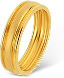
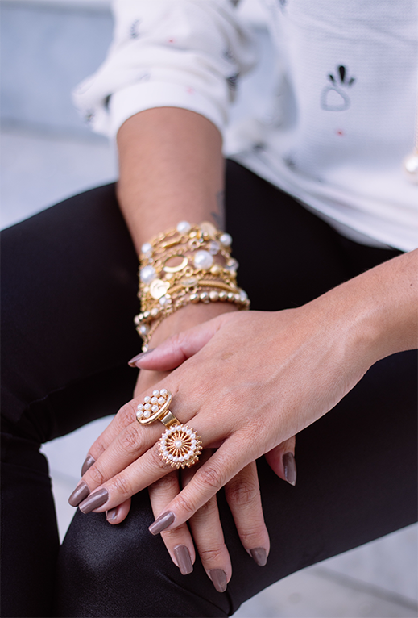
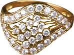
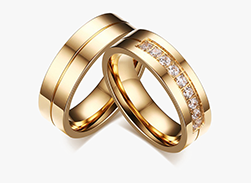
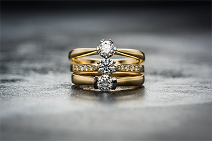

Каблучка «Орбіта»
Лаконічна позолочена каблучка
4 290 грн
Дізнатися більшеМАЛЕНЬКІ ДЕТАЛІ · ВЕЛИКІ ПОЧУТТЯ
LUNE Jewelry — прикраси з витонченим характером, які легко стають частиною саме твоєї історії.
Відкрити колекцію
ОБРАНЕ LUNE
Улюблені форми, теплий блиск і дизайн, який не потребує зайвих слів.




НАША ФІЛОСОФІЯ
Ми віримо, що прикраса — це не просто деталь образу. Це нагадування про важливе, символ близькості або маленький подарунок собі без особливого приводу.
Познайомитися з LUNEНАШІ ЦІННОСТІ
Форми, які гармонійно доповнюють твій стиль щодня.
Від силуету прикраси до пакування кожного замовлення.
Прикраси, які стають частиною твоїх спогадів.
© 2026 Увага! Цей веб-сайт є навчальним проєктом, створеним виключно з освітньою метою в межах навчального курсу. Сайт не здійснює комерційної діяльності, не надає платних послуг і не призначений для отримання прибутку.